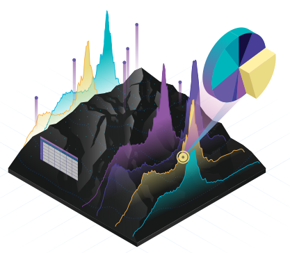

Asif Marazi
A Little About Me
"I am a research student with a focus on investigating the impacts of climate change on water resources, particularly in the realms of snow, glaciers, and streamflows. My primary tools for monitoring these resources include Remote Sensing and Geographical Information Systems (GIS). In addition to my research endeavors, I also offer freelance services in web development and data analysis."
